Bohol Delicacies- Must-have Treats and Pasalubongs
Aside from the famed dolphin watching or the notable diving spots and natural wonders, Bohol is further known
for its festivities and merry-making. And one thing to boast upon is the native mouth-watering delights that
are
already been recognized worldwide as signature "Boholano Delicacies".
As you would always know, food complements every get-together. So when in vacation, appropriate enough budget
for this. As you visit Bohol, never forget to taste some of the mouth delectation. And bring some as
“pasalubong” for your loved ones who are not as lucky as you are. At least, let them taste Bohol.
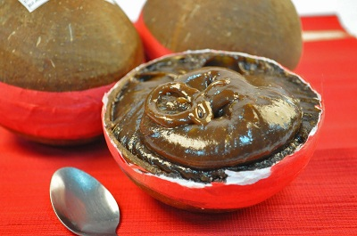
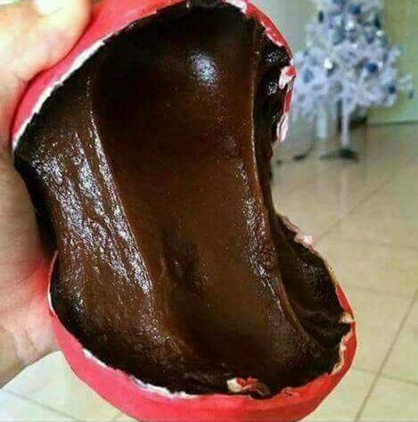
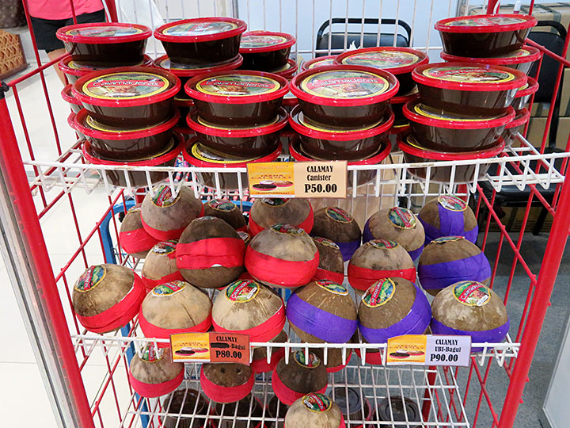
They say that a trip to Bohol would never be complete without bringing some of its signature
delicacy, a simple yet sweet treat in native coconut shell, the Calamay. So don’t forget to bring home some
of these for those with sweet tooth at home.This is one of the must-try treats when visiting Bohol Though
calamay is known across the country (with other names), nothing beats the Calamay fr500pxom Jagna, enclosed in a
coconut shell and sealed with a red band. It is a concoction of glutinous rice, sugar, coconut milk and some peanuts.
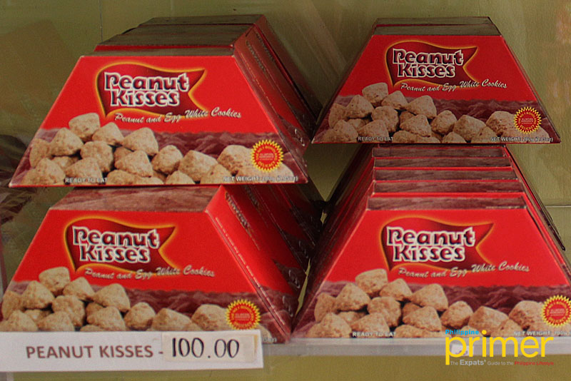
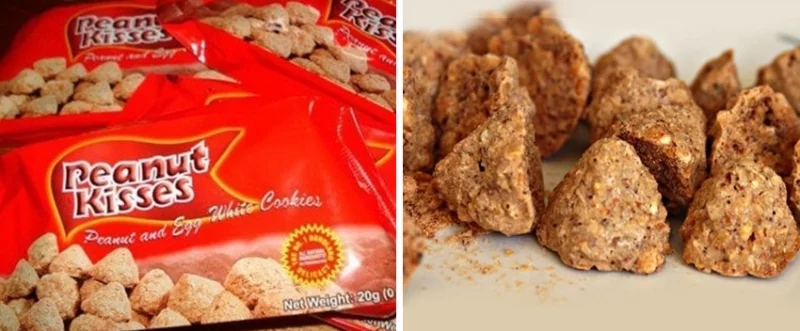
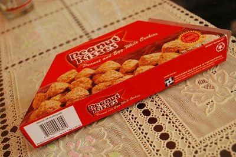
This is a signature Boholano recipe and only here you can find cookies shaped like a
miniature Chocolate Hills (the famous attraction of Bohol) or Hershey Kisses. It is basically made of
high-quality peanuts and eggs, baked crisp to bring that nutty crunch in every bite. Every department
stores and souvenir shops have displays of these delicious pasalubongs.
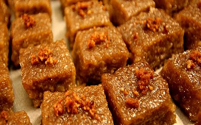
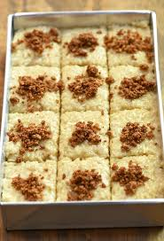
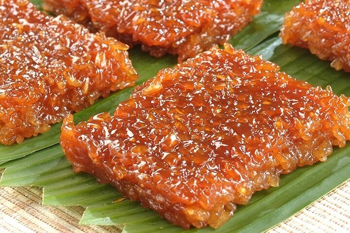
Biko (Rice Cake) is very well-known boholano's home-made dessert or 'kakanin'. Almost every
boholano know how to cook this dessert. Biko is composed of pilit (sticky rice) cook and mix with latik
(coco jam).
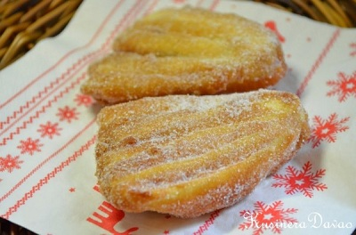
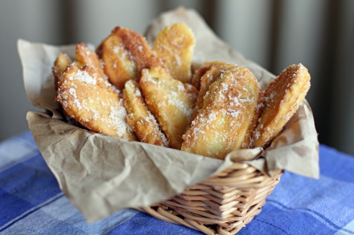
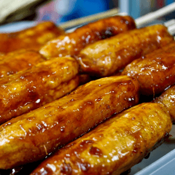
These are among the favorites, not just to the children but to adults as well.
Made from Saba bananas, dipped in a sticky mixture, fried and then rolled in sugar, it is
perfect for everyday snacks and healthy too.
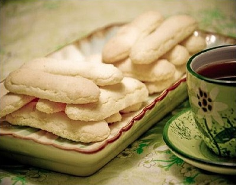
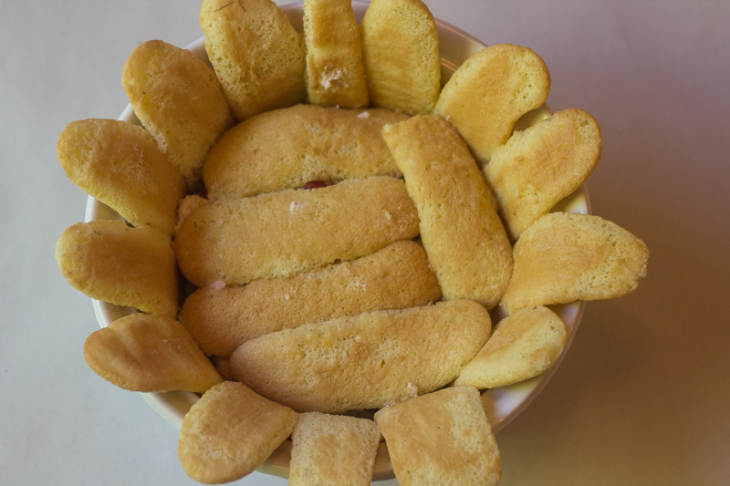
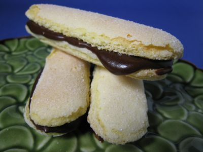
Broa (Lady Fingers) A cookie, native from Baclayon, soft in texture that literally melts in
your mouth once you take a bite. It is light and crisp, perfect for snacks with milk, coffee or hot
chocolate. It is also recommended in making Mango Refrigerator Cake.
Souvenirs and Handicrafts
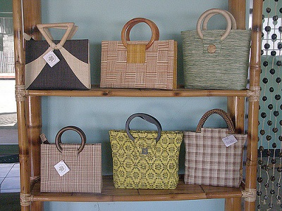
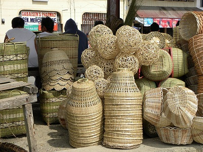
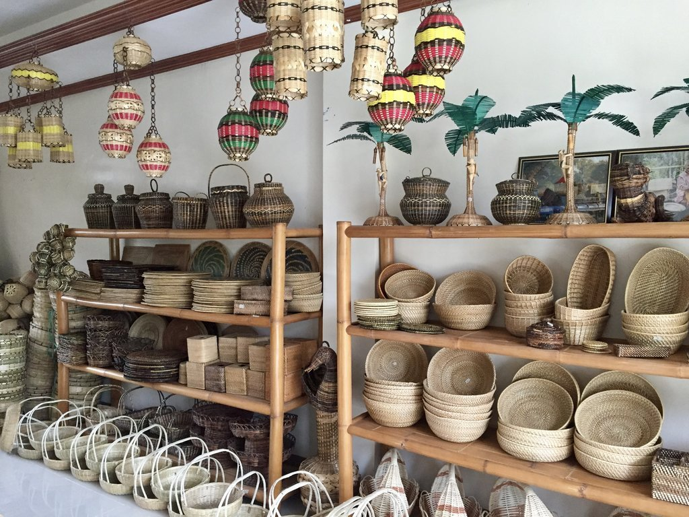
Bohol’s hand-made products include bags, decors, house accessories, floor mats, fashion
accessories, hats, baskets and other materials.These products are not patronized only in the province;
it is also being exported to different countries already. It already evaded the international markets,
thus more and more products are made. One famous product is the baskets from the town of Antequera.
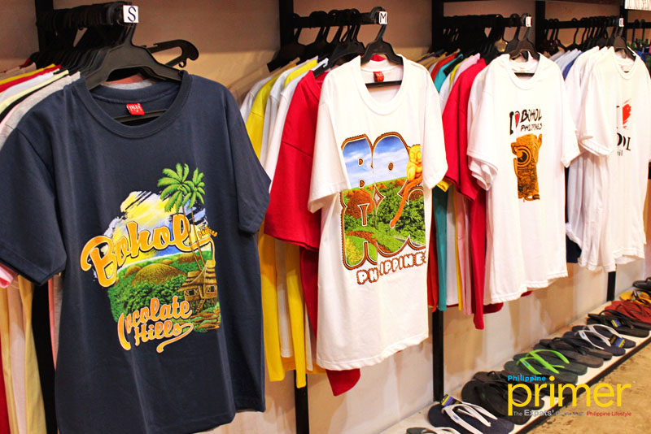
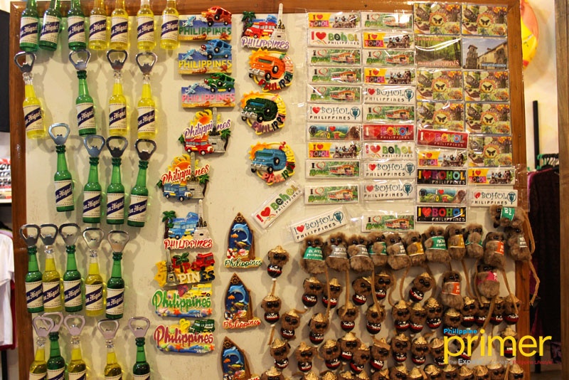
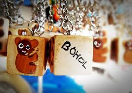
Bohol Shopping is made possible by the four biggest malls in the City of Tagbilaran namely:
the Island City Mall, the Bohol Quality Mall, the Alturas Mall and the Plaza Marcela Discount Store.
Actually, only the first two are considered malls, which offers wide variety of entertainment, leisure and
pleasure. They also sell almost everything from groceries, hardware appliances, bakeshop, shoes and
furnitures, you name it, they have it all.Tarsier Key-chain souvenirs are soooo cute & are cheapest at the
first stop of the Countryside Tour -- the Blood Compact Site.Souvenir items are also available for those
who want to own
something memorable that would remind them of the province of Bohol. There are t-shirts about Bohol,
keychains and many more.